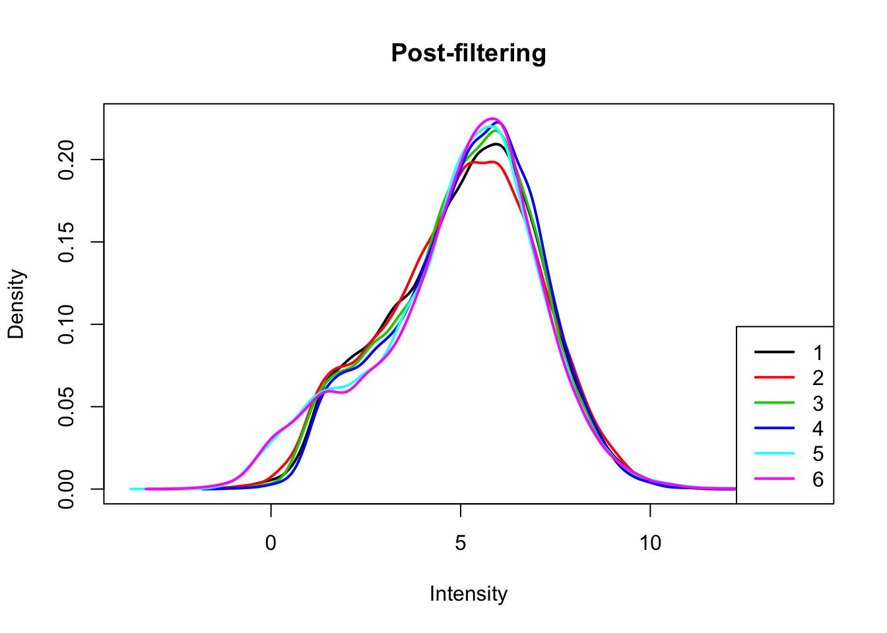
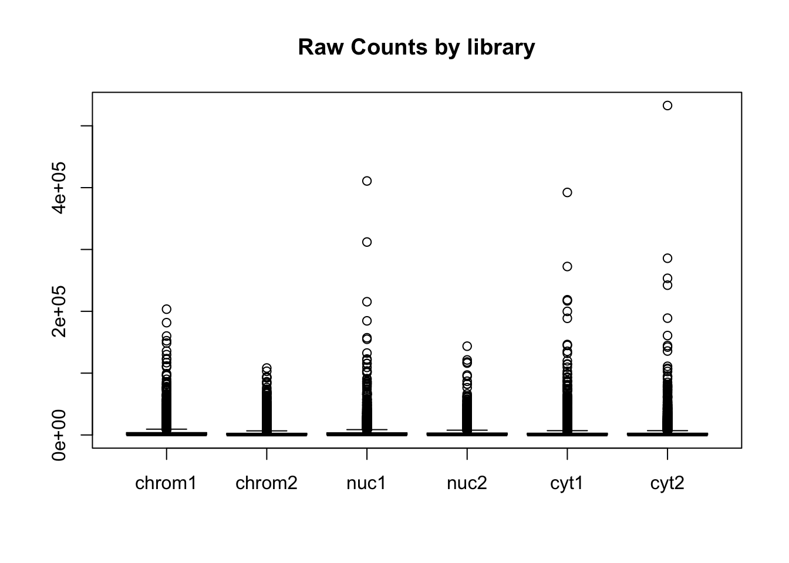
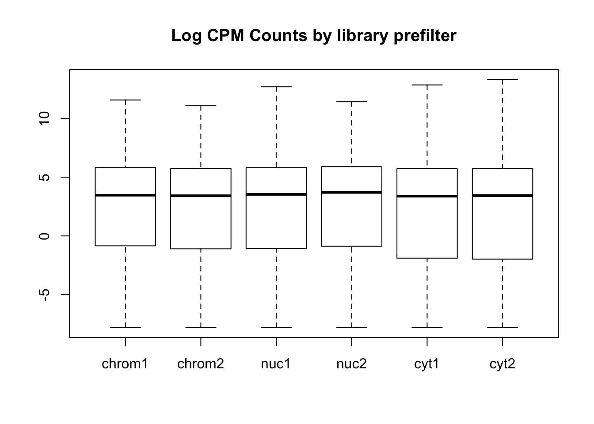
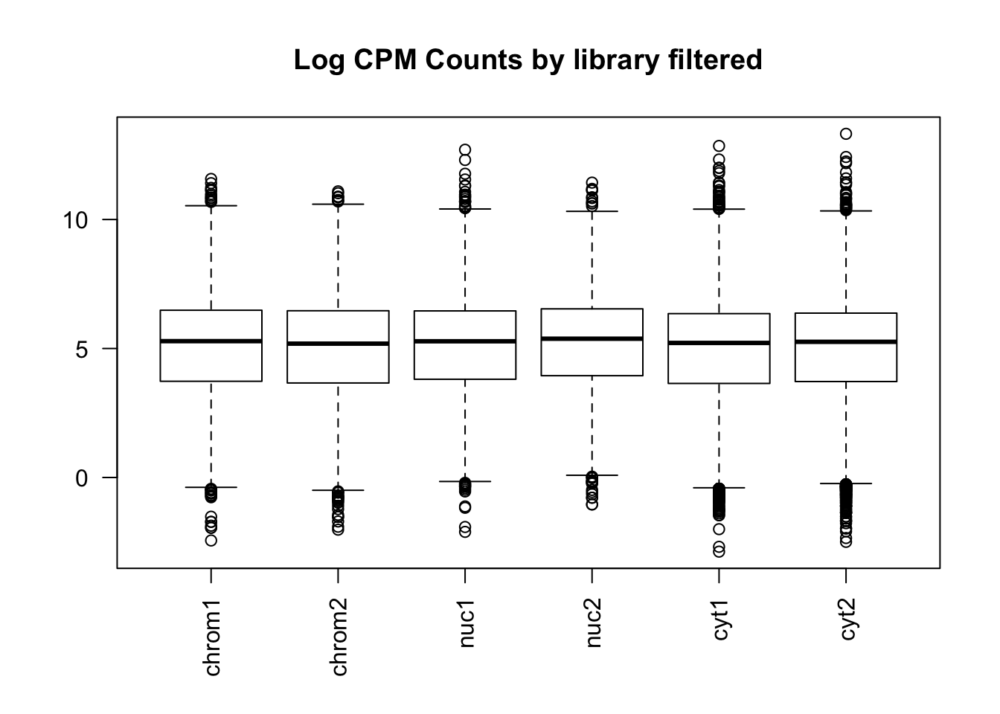
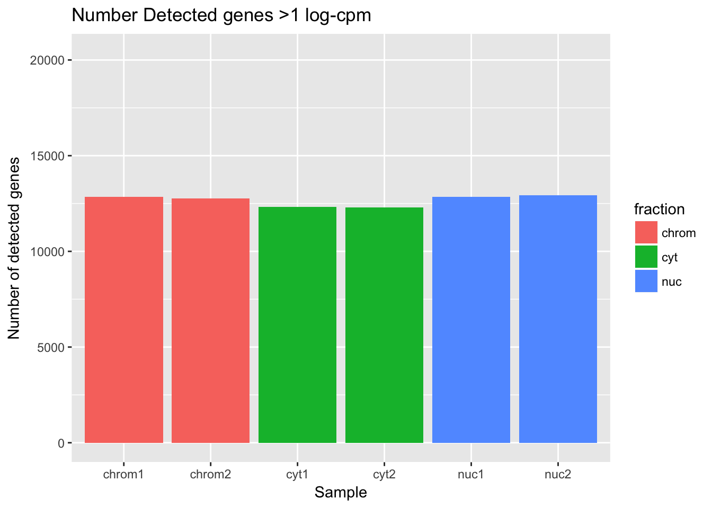
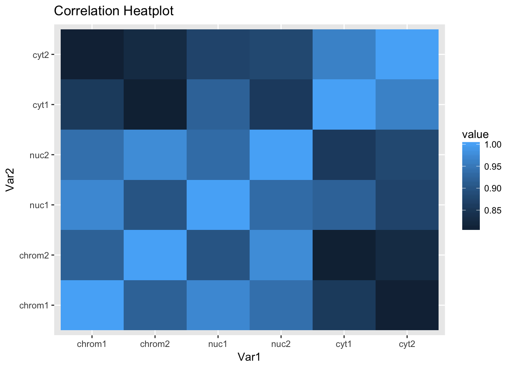

Total and Nuclear fraction RNA seq
Briana Mittleman
5/8/2018
I will use this analysis to look at general QC measurements for the RNA seq on the total and nuclear fraction with respect to my three-prime-seq snakemake pipeline.
There are 2 lines with files for chromatin, nuclear and cytoplasmic. There is a sample switch in this anaylsis chrom.1.S3 and Cyt.1.S1 are switched. We know this from a heatmap analysis.
Library
library(ggplot2)
library(dplyr)##
## Attaching package: 'dplyr'## The following objects are masked from 'package:stats':
##
## filter, lag## The following objects are masked from 'package:base':
##
## intersect, setdiff, setequal, unionlibrary(edgeR)## Warning: package 'edgeR' was built under R version 3.4.3## Loading required package: limma## Warning: package 'limma' was built under R version 3.4.3library(workflowr)## Loading required package: rmarkdown## This is workflowr version 1.0.1
## Run ?workflowr for help getting startedlibrary(reshape2)## Warning: package 'reshape2' was built under R version 3.4.3Mapped reads
First I want to look at the number of reads that map. I will flip the sample swap for this analysis so it it correct.
#wc -l file / 4
read_chrom1=63641411
read_chrom2= 61957677
read_nuc1= 73481177
read_nuc2= 60386733
read_cyt1= 74784589
read_cyt2= 56100500Now look at how many reads mapped:
#samtools view -c -F 4 file
map_chrom1=53856948
map_chrom2= 52630632
map_nuc1= 65023318
map_nuc2= 53445556
map_cyt1=67829422
map_cyt2=49619272Percent mapped per line:
perc_map_chrom1= map_chrom1/read_chrom1 *100
perc_map_chrom2=map_chrom2/read_chrom2 * 100
perc_map_nuc1=map_nuc1/read_nuc1 * 100
perc_map_nuc2= map_nuc2/read_nuc2 * 100
perc_map_cyt1=map_cyt1/read_cyt1 * 100
perc_map_cyt2=map_cyt2/read_cyt2 * 100Put this information in a dataframe to plot it:
percmap=c(perc_map_chrom1,perc_map_chrom2,perc_map_nuc1,perc_map_nuc2,perc_map_cyt1, perc_map_cyt2)
fraction=c("chrom", "chrom", "nuc", "nuc", "cyt", "cyt")
sample=c("chrom1", "chrom2", "nuc1", "nuc2", "cyt1", "cyt2")
percmap_df=as.data.frame(cbind(sample,fraction, percmap), stringsAsFactors = F)
percmap_df$percmap= as.numeric(percmap_df$percmap)
ggplot(percmap_df, aes(y=percmap, x=sample, fill=fraction)) + geom_col() + scale_y_continuous(limits=c(0,100)) + labs(y="Percent mapped", title="Percent of reads mapped") This shows that mapping is a little bit higher for the cytoplasmic and nuclear fractions than for the chromatin fraction.
This shows that mapping is a little bit higher for the cytoplasmic and nuclear fractions than for the chromatin fraction.
Gene count analysis:
Import gene count data. I will fix the sample switch at this point.
cov_chrom1=read.table("../data/total.nuc.cyt.genecounts/gene_covYG-SP20-Cyt-1_S1_L005_R1_001-genecov.txt", stringsAsFactors = FALSE)
names(cov_chrom1)=c("chr", "start", "end", "gene", "score", "strand", "count" )
cov_chrom2=read.table("../data/total.nuc.cyt.genecounts/gene_covYG-SP20-Chrom-2_S6_L005_R1_001-genecov.txt", stringsAsFactors = FALSE)
names(cov_chrom2)=c("chr", "start", "end", "gene", "score", "strand", "count" )
cov_nuc1=read.table("../data/total.nuc.cyt.genecounts/gene_covYG-SP20-Nuc-1_S2_L005_R1_001-genecov.txt", stringsAsFactors = FALSE)
names(cov_nuc1)=c("chr", "start", "end", "gene", "score", "strand", "count" )
cov_nuc2=read.table("../data/total.nuc.cyt.genecounts/gene_covYG-SP20-Nuc-2_S5_L005_R1_001-genecov.txt", stringsAsFactors = FALSE)
names(cov_nuc2)=c("chr", "start", "end", "gene", "score", "strand", "count" )
cov_cyt1= read.table("../data/total.nuc.cyt.genecounts/gene_covYG-SP20-Chrom-1_S3_L005_R1_001-genecov.txt", stringsAsFactors = FALSE)
names(cov_cyt1)=c("chr", "start", "end", "gene", "score", "strand", "count" )
cov_cyt2=read.table("../data/total.nuc.cyt.genecounts/gene_covYG-SP20-Cyt-2_S4_L005_R1_001-genecov.txt", stringsAsFactors = FALSE)
names(cov_cyt2)=c("chr", "start", "end", "gene", "score", "strand", "count" )Look at the distribution of the gene counts. To do this I need to make a matrix with gene by sample to give the cpm command.
count_matrix=cbind(cov_chrom1$count, cov_chrom2$count, cov_nuc1$count, cov_nuc2$count, cov_cyt1$count, cov_cyt2$count)
gene_length=cov_chrom1 %>% mutate(genelength=end-start) %>% select(genelength)
gene_length_vec=as.vector(gene_length$genelength)
count_matrix_cpm=cpm(count_matrix, log=T, gene.length=gene_length_vec )Plot the distribution of the log cpm counts.
plotDensities(count_matrix_cpm, legend = "bottomright", main="Pre-filtering")
abline(v = 0, lty = 3)I will only keep genes that have a log cpm greater than 1 in at least 3 samples.
keep.exprs=rowSums(count_matrix_cpm>1) >=3
count_matrix_cpm_filt= count_matrix_cpm[keep.exprs,]
plotDensities(count_matrix_cpm_filt, legend = "bottomright", main="Post-filtering")
Create boxplots:
#pre standardization
colnames(count_matrix)=sample
boxplot(count_matrix, main="Raw Counts by library")
#prefilt
colnames(count_matrix_cpm)=sample
boxplot(count_matrix_cpm, main="Log CPM Counts by library prefilter")
#filtered
colnames(count_matrix_cpm_filt)=sample
boxplot(count_matrix_cpm_filt, las=2,main="Log CPM Counts by library filtered") This shows that we do not need to do any extreme normalization. I will skip it for this initial analysis.
Now I can look at the number of genes detected in each sample according to this filtering practice. I will use >1 log cpm for “detected”.
detected_chrom1=sum(count_matrix_cpm_filt[,1] > 1)
detected_chrom2=sum(count_matrix_cpm_filt[,2] > 1)
detected_nuc1=sum(count_matrix_cpm_filt[,3] > 1)
detected_nuc2=sum(count_matrix_cpm_filt[,4] > 1)
detected_cyt1=sum(count_matrix_cpm_filt[,5] > 1)
detected_cyt2=sum(count_matrix_cpm_filt[,6] > 1)Plot these values like the percent mapped.
detected_vec=c(detected_chrom1, detected_chrom2, detected_nuc1, detected_nuc2, detected_cyt1, detected_cyt2)
det_df=as.data.frame(cbind(sample,fraction, detected_vec), stringsAsFactors = F)
det_df$detected_vec= as.numeric(det_df$detected_vec)
ggplot(det_df, aes(y=detected_vec, x=sample, fill=fraction)) + geom_col() + labs(x="Sample", y="Number of detected genes", title="Number Detected genes >1 log-cpm") + scale_y_continuous(limits=c(0,20345))
total_genes=20345
det_df_prop= det_df %>% mutate(prop_det=detected_vec/total_genes)
ggplot(det_df_prop, aes(y=prop_det, x=sample, fill=fraction)) + geom_col() + labs(x="Sample", y="Proportion detected genes", title="Proportion Detected Genes >1 log-cpm") + scale_y_continuous(limits=c(0,1))Cluster analysis
Create a correlation matrix between the counts.
cor_function=function(data){
corr_matrix= matrix(0,ncol(data),ncol(data))
for (i in seq(1,ncol(data))){
for (j in seq(1,ncol(data))){
x=cor.test(data[,i], data[,j], method='pearson')
cor_ij=as.numeric(x$estimate)
corr_matrix[i,j]=cor_ij
}
}
return(corr_matrix)
}
count_cor=cor_function(count_matrix_cpm_filt)
rownames(count_cor)=sample
colnames(count_cor)=sampleReshape correlation matrix and plot it.
melted_count_corr=melt(count_cor)
ggheatmap=ggplot(data = melted_count_corr, aes(x=Var1, y=Var2, fill=value)) +
geom_tile() +
labs(title="Correlation Heatplot")
ggheatmap
This is the expected plot. The data clusters by fraction and the total and nuclear are more similar than the chromatin fraction.
This R Markdown site was created with workflowr